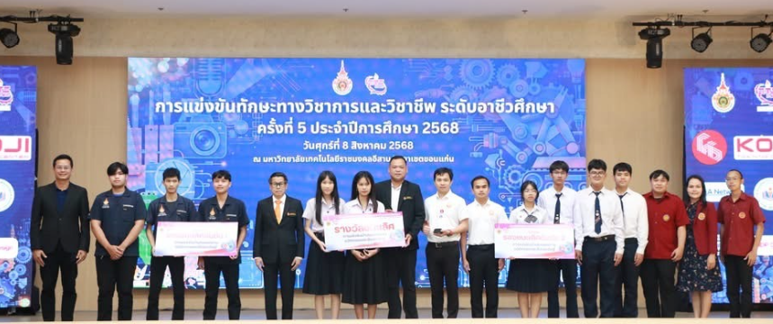
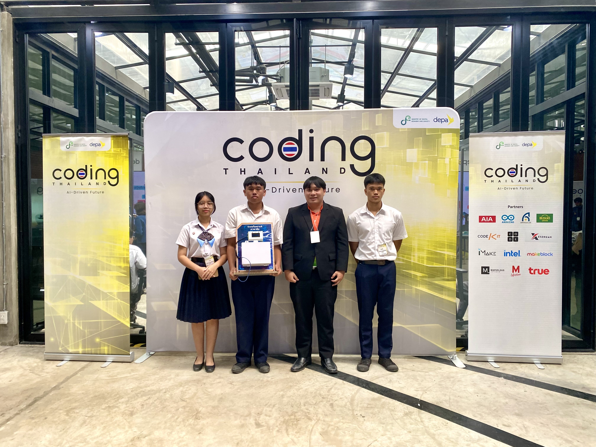
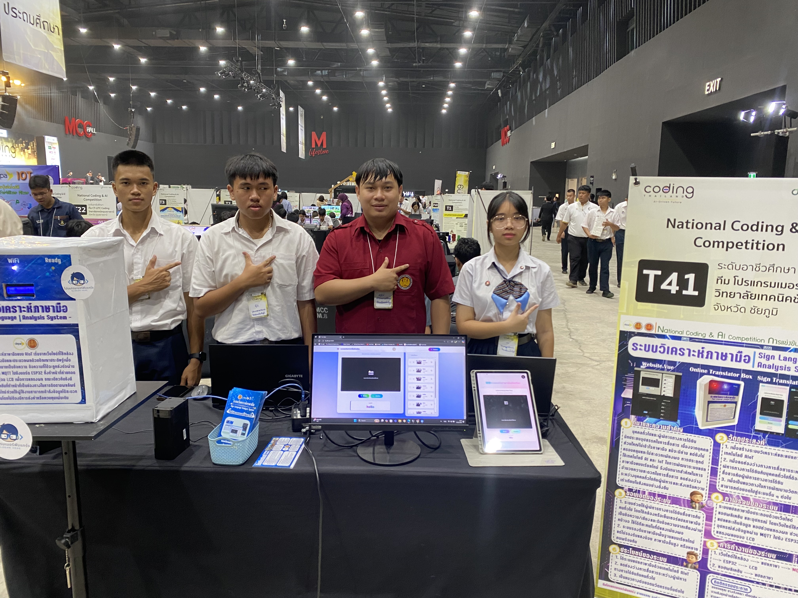
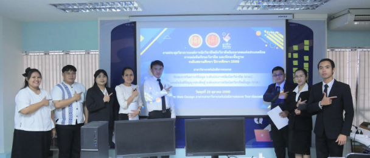
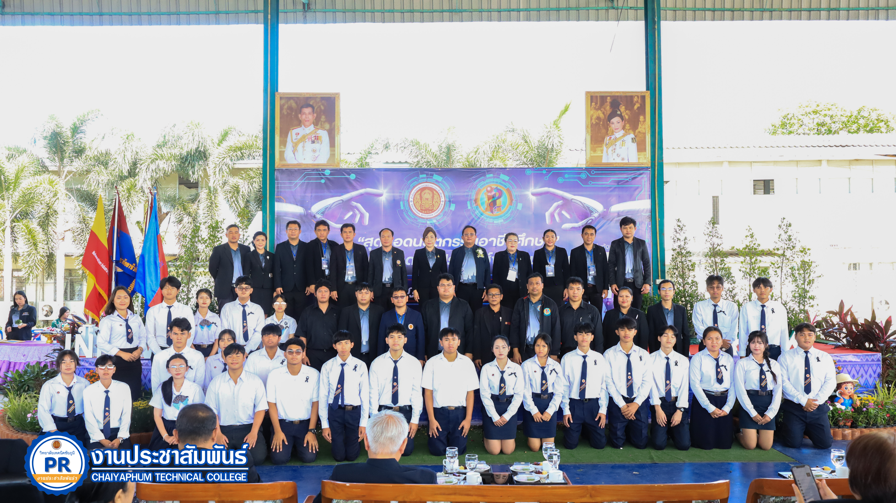
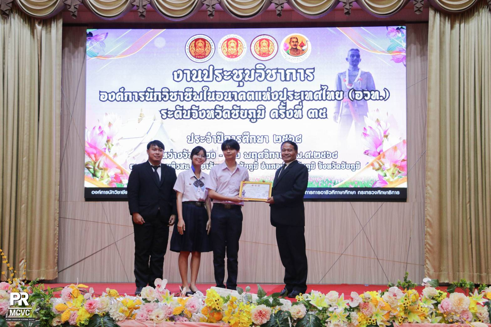
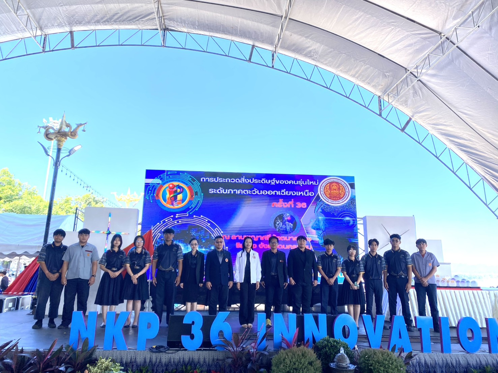
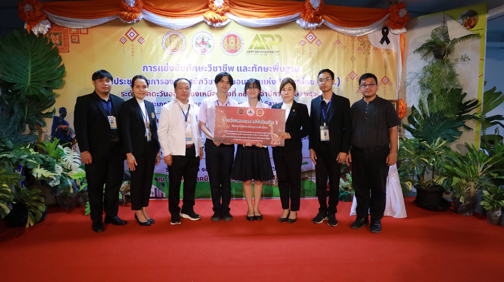
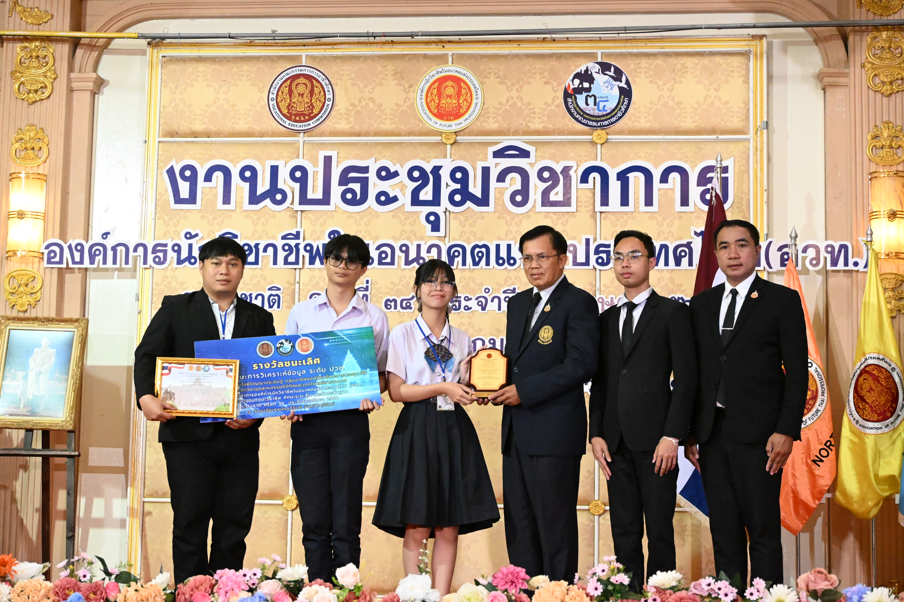

การแข่งขันนำเสนอนวัตกรรมและสิ่งประดิษฐ์ ราชมงคลขอนแก่น ครั้งที่ 5
วันที่ 8 สิงหาคม 2568 นำนักศึกษาเข้าร่วมการแข่งขันนำเสนอนวัตกรรมและสิ่งประดิษฐ์ ราชมงคล ระดับอาชีวิศึกษา ได้รับรางวัลรองชนะเลิศอันดับที่ 2 เหรียญทอง
ดูรายละเอียดเพิ่มเติม

การแข่งขันผลงานนวัตกรรมดิจิทัล IoT AIoT & Ros รอบ Regional Coding & AI Competition ภาคอีสานตอนกลาง
วันที่ 21 สิงหาคม 2568 เข้าร่วมการแข่งขันผลงานนวัตกรรมดิจิทัล IoT AIoT & Ros รอบ Regional Coding & AI Competition ภาคอีสานตอนกลาง ผ่านเข้าสู่รอบ National Coding & AI Competition ระดับประเทศ
ดูรายละเอียดเพิ่มเติม
การแข่งขัน สิ่งประดิษฐ์ By Depa รอบ National Coding & AI Competition
วันที่ 3 - 5 ตุลาคม 2568 นำนักศึกษาเข้าร่วมการแข่งขัน National Coding & AI Competition ภายใต้โครงการ Coding Thailand 2025: AI-Driven Future
ดูรายละเอียดเพิ่มเติม
การประกวดสิ่งประดิษฐ์ของคนรุ่นใหม่ ระดับสถานศึกษา ประจำปีการศึกษา 2568
วันที่ 29 ตุลาคม 2568 เป็นครูผู้ควบคุมและนำนักศึกษาเข้าร่วมการประกวดสิ่งประดิษฐ์ของคนรุ่นใหม่ ระดับสถานศึกษา ประจำปีการศึกษา 2568
ดูรายละเอียดเพิ่มเติม

การแข่งขันทักษะวิชาชีพและทักษะพื้นฐาน ทักษะเทคโนโลยีสารสนเทศ ระดับสถานศึกษา ปีการศึกษา 2568
วันที่ 29 ตุลาคม 2568 นำนักศึกษาเข้าร่วมงานประชุมวิชาการองค์การนักวิชาชีพแห่งประเทศไทย (อวท.) การแข่งขันทักษะวิชาชีพและทักษะพื้นฐาน ครั้งที่ 35 ระดับสถานศึกษา ประจำปีการศึกษา 2568
ดูรายละเอียดเพิ่มเติม
การประกวดสิ่งประดิษฐ์ของคนรุ่นใหม่ ระดับกลุ่มจังหวัด ชัยภูมิ-มหาสารคาม ประจำปีการศึกษา 2568
วันที่ 13-14 พฤศจิกายน 2568 เป็นครูผู้ควบคุมและนำนักศึกษาเข้าร่วมการประกวดสิ่งประดิษฐ์ของคนรุ่นใหม่ ระดับกลุ่มจังหวัด ชัยภูมิ-มหาสารคาม ประจำปีการศึกษา 2568 ณ โดมวิทยาลัยเกษตรและเทคโนโลยีชัยภูมิ โดย 1. ประเภทที่ 2 ระบบวิเคราะห์ภาษามือด้วยเทคโนโลยี AIoT (ได้รับรางวัลชนะเลิศ) 2. ประเภทที่ 7 ศูนย์ข้อมูลสมัครเรียนอัจฉริยะ วิทยาลัยเทคนิคชัยภูมิ (ได้รับรางวัลรองชนะเลิศอันดับที่ 1)
ดูรายละเอียดเพิ่มเติม
การแข่งขันทักษะวิชาชีพและทักษะพื้นฐาน ระดับจังหวัดชัยภูมิ ประจำปีการศึกษา 2568
วันที่ 20-22 พฤศจิกายน 2568 เป็นครูผู้ควบคุมและนำนักศึกษาเข้าร่วมการแข่งขันทักษะวิชาชีพและทักษะพื้นฐาน ระดับจังหวัดชัยภูมิ ประจำปีการศึกษา 2568 1. ทักษะการวิเคราะห์ข้อมูล ระดับ ปวช. ประเภท ทีม (ได้รับรางวัลชนะเลิศ)
ดูรายละเอียดเพิ่มเติม
การประกวดสิ่งประดิษฐ์ของคนรุ่นใหม่ ระดับภาคตะวันออกเฉียงเหนือ ประจำปีการศึกษา 2568
วันที่ 28-30 พฤศจิกายน 2568 เป็นครูผู้ควบคุมและนำนักศึกษาเข้าร่วมการประกวดสิ่งประดิษฐ์ของคนรุ่นใหม่ ระดับภาคตะวันออกเฉียงเหนือ ประจำปีการศึกษา 2568 1. ประเภทที่ 2 ระบบวิเคราะห์ภาษามือด้วยเทคโนโลยี AIoT (มาตรฐานเหรียญทอง) 2. ประเภทที่ 7 ศูนย์ข้อมูลสมัครเรียนอัจฉริยะ วิทยาลัยเทคนิคชัยภูมิ ( มาตรฐานเหรียญทอง)
ดูรายละเอียดเพิ่มเติม
การแข่งขันทักษะวิชาชีพและทักษะพื้นฐาน ระดับภาคตะวันออกเฉียงเหนือ ประจำปีการศึกษา 2568
วันที่ 15-19 ธันวาคม 2568
เป็นครูผู้ควบคุมและนำนักศึกษาเข้าร่วมการแข่งขันทักษะวิชาชีพและทักษะพื้นฐาน
ระดับภาคตะวันออกเฉียงเหนือ ประจำปีการศึกษา 2568
ทักษะการวิเคราะห์ข้อมูล ระดับ ปวช. ประเภท ทีม (ได้รับรางวัลรองชนะเลิศอันดับ 1)
เป็นกรรมการดำเนินงาน ทักษะการวิเคราะห์ข้อมูล
และทักษะเทคโนโลยีปัญญาประดิษฐ์

การแข่งขันทักษะวิชาชีพและทักษะพื้นฐาน ระดับชาติ ปีการศึกษา 2568
วันที่ 11-15 กุมภาพันธ์ 2569
เป็นครูผู้ควบคุมและนำนักศึกษาเข้าร่วมการแข่งขันทักษะวิชาชีพและทักษะพื้นฐาน
ระดับชาติ ประจำปีการศึกษา 2568 จังหวัดบุรีรัมย์
ทักษะการวิเคราะห์ข้อมูล ระดับ ปวช. ประเภท ทีม (ได้รับรางวัลชนะเลิศอันดับ 1)
เป็นกรรมการดำเนินงาน ทักษะการวิเคราะห์ข้อมูล
ดูรายละเอียดเพิ่มเติม